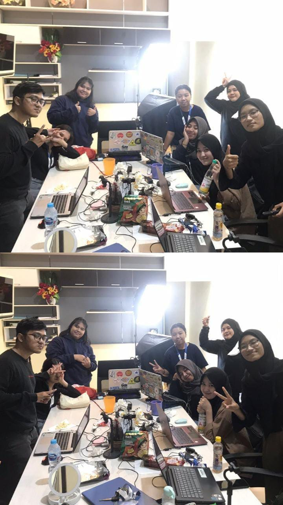
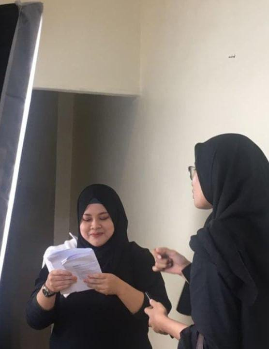
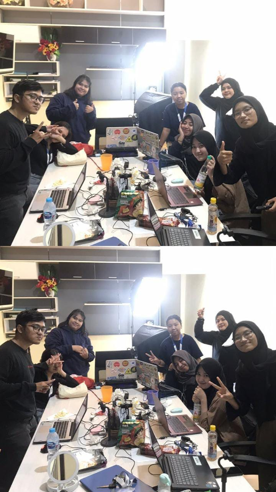
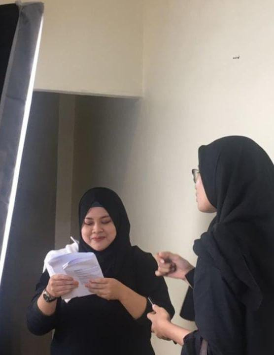

My Work
Broiler Monitoring &
Analysis Website
This website provides a real-time dashboard to monitor temperature, humidity, and ammonia levels in a broiler coop. It also includes research data and testing of the Naive Bayes method for automated decision-making. Built with Python (Flask), HTML, CSS, and MySQL.
IoT-Broiler
Monitoring System
Uses DHT22 and MQ-135 sensors connected to an ESP32 to read temperature, humidity, and ammonia levels. Data is sent to a server and displayed on an LCD, while fans, lights, and mist makers are automatically controlled based on Naive Bayes classification results.
Blynk
Integration
This system integrates Blynk with ESP32 to enable real-time monitoring and manual control of fans, lamp, & mist makers in a broiler coop. Users can view temperature, humidity, and ammonia levels directly from the mobile app & control each component remotely.
International Shipping Website (POS Indonesia)
A frontend website prototype for POS Indonesia's international delivery service. This platform presents service information, pricing details, delivery estimations, and contact forms using HTML, CSS, and JavaScript. Designed with a responsive and user-friendly layout.
Water Level Control System - Team
This project features an automatic water level controller using Arduino and an ultrasonic sensor. When the water level falls below a defined point, a pump is triggered via a relay module. Built collaboratively with Arduino IDE (C++) and Relay
Content
Creation
Intern as a content creator & writer for a digital agency, handling Instagram feeds & stories for internal and clients. Focused on creating educational and promotional content while maintaining brand identity & boosting engagement.
 


